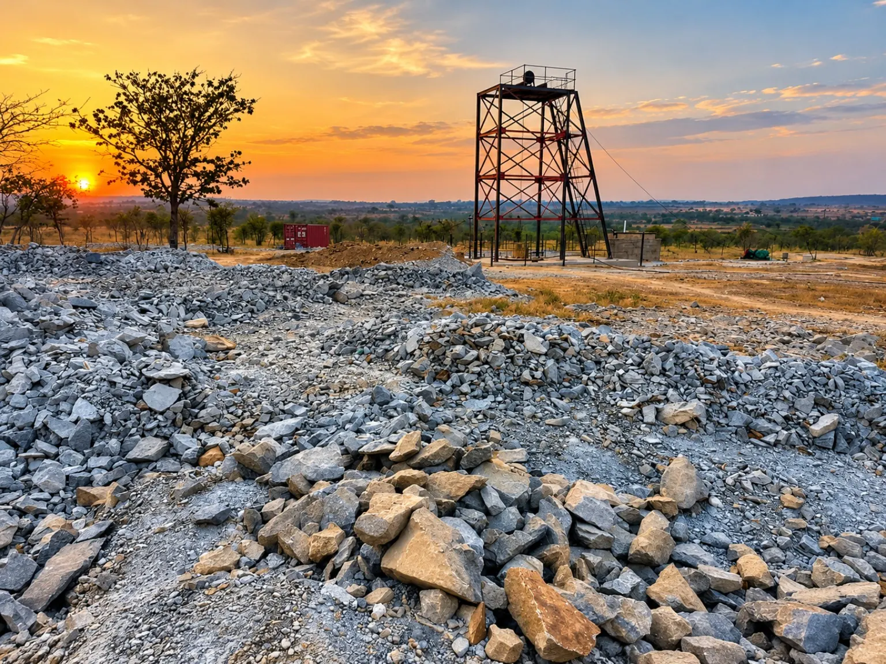
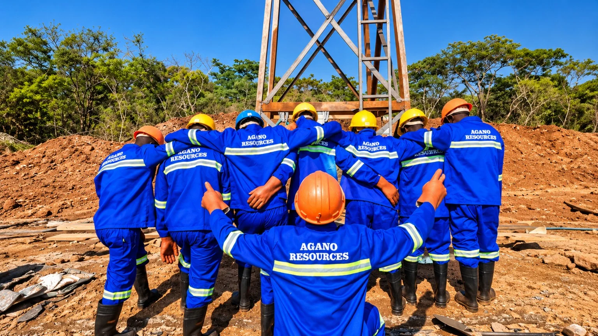
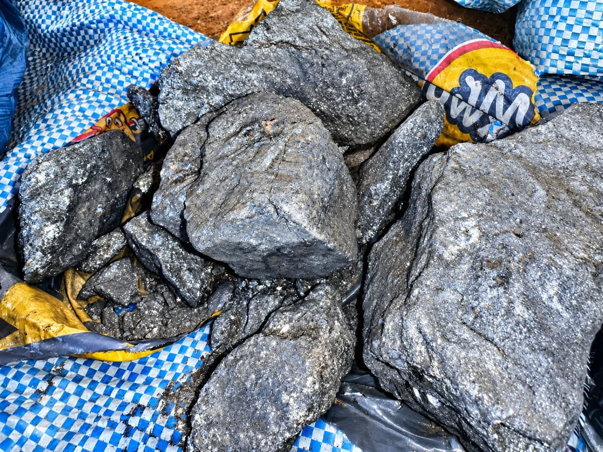
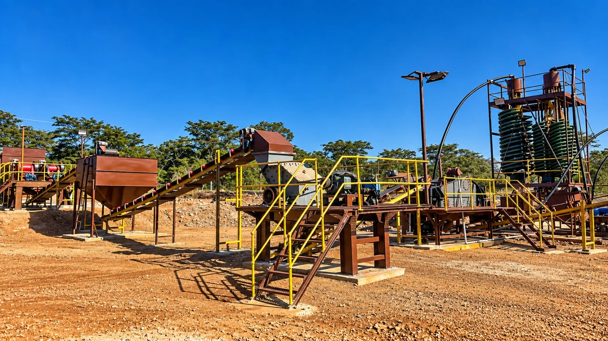
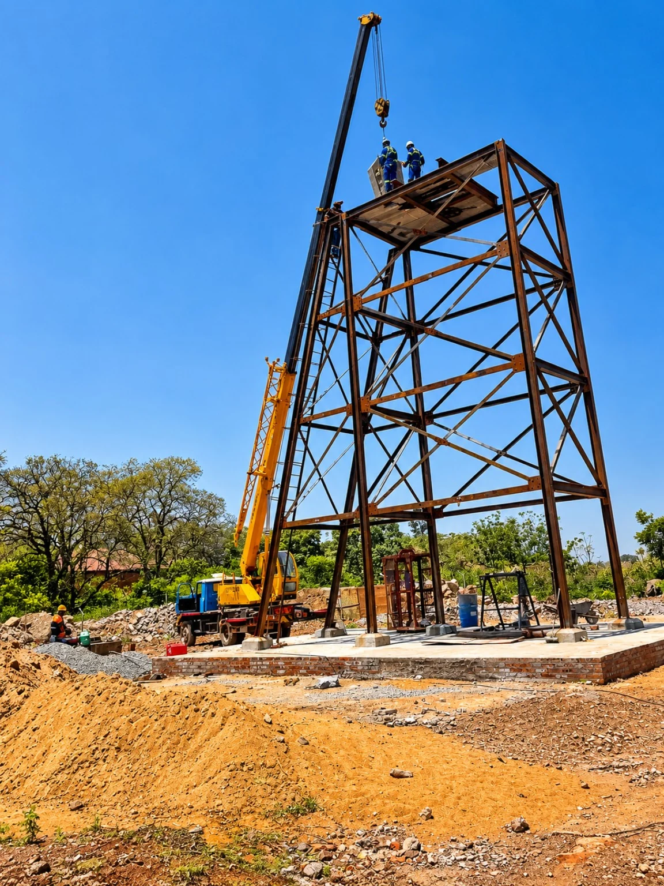

LonRho - Gold & Antimony Mine
ZIMBABWE
Situated in Kwekwe within the Globe & Phoenix complex. This mine averages 10 grams a tonne and 35-45% SB for antimony. LonRho is currently on level 2 at 44 meters and promises to be our best producing shaft.

Zimbabwean roots. Generational purpose.
An independent Zimbabwean mining house connecting gold and antimony extraction, mineral processing and responsible stewardship.
Who we are
AGANO Legacy Resources is a premier, independent Zimbabwean mining house specializing in the extraction and processing of high-grade gold and antimony assets. Driven by an elite team of 300 skilled mining and metallurgical professionals, our enterprise operates a highly resilient physical asset network across the historic Silobela-Gothic, Pagemesa and Fortuna complex, Sebakwe- Anzac bloc, and Globe&Phoenix LonRho reef, and the Great Dyke Sherwood mine. We manage the entire mineral value chain internally—from deep-level extraction to advanced processing—delivering premium, market-ready products to the global industrial market.
Discover our story
Our story is rooted in the rich earth of Zimbabwe’s historic gold and antimony belts. From the foundations of RIFA to the vision of AGANO Legacy Resources, our journey brings together respect for heritage, faith in Zimbabwean capability, and a commitment to building an enterprise that will endure across generations.
That journey has demanded resilience. Taking responsibility for operations facing significant challenges brought a clear purpose: restore discipline, rebuild trust, and create a sustainable foundation for growth.
We believe that mineral wealth carries a duty of stewardship. Every resource entrusted to us brings responsibilities—to the land, to the people who work it, and to the communities whose futures are connected to it.
Our approach centres on strengthening operational governance, pursuing statutory compliance, improving environmental safeguards, and building fair and sustainable livelihoods for our mining teams.
For us, legacy is measured in productive operations, trusted partnerships, dignified livelihoods and opportunities preserved for those who come after us. Our ambition is to contribute to Zimbabwe’s industrial capability while building wealth with purpose and passing on the principles that give it meaning.
Our Minerals
Unlike traditional mining operations that discover companion minerals while chasing gold, our journey began with a definitive focus on antimony. It was through our dedicated work in mastering this critical, high-demand industrial metalloid that we subsequently uncovered our high-grade gold reef structures. This unique operational sequence has shaped our identity and gave us a deep, specialized expertise in complex base-metal processing.
Today, our primary corporate focus is on perfecting our craft in antimony processing. We are systematically investing in advanced differential technologies, optimizing our plant throughput, and scaling our extraction frameworks across the Sherwood Mine and associated reef networks. By refining our metallurgical recovery systems to the highest international standards, our clear ambition is to establish the enterprise as a top producer and processor of high-grade antimony in Zimbabwe, delivering an uncompromised, compliant, and strategic supply chain to the global industrial market.
Explore our minerals
Our mines
ZIMBABWE
Situated in Kwekwe within the Globe & Phoenix complex. This mine averages 10 grams a tonne and 35-45% SB for antimony. LonRho is currently on level 2 at 44 meters and promises to be our best producing shaft.
An antimony project in the Sebakwe block, with reef development directed towards the main Jojo ore body.
This block is in the prominent, geologically significant mineral location situated within the central part of the Archean Midlands greenstone belt on the Zimbabwe Craton, positioning it along the historically prolific Sherwood Deformation Zone (SDZ). Operations utilize one primary deep-level shaft for targeted underground reef development alongside a high-volume open-cast mining operation to efficiently harvest the surface extensions of the continuous ore body.
ZIMBABWE
This mine is named after the historic rich antimony belt of Silobela, Gothic. However, this, what we like to call it, stronghold asset houses prestigious historic reefs of Fortuna, Pagamesa and Gothic. The mine produces grades of up to 28% Stibnite. Situated on the Gothic, because it is situated on the Pagamesa and Fortuna belts, this mine houses three shafts in operation earning it its name, Strong-hold.
Sebakwe processing facility

Located in Sebakwe, Kwekwe, our facility is designed to produce antimony concentrate. We source our feed ore from Pagamesa, Anzac & LonRho reefs. The processing streamline includes gravity concentration- Alkaline Leach- electro-winning- Smelting.
Explore the processing plantInside AGANO

Explore our image collection, from mine development and material handling to processing infrastructure and the people behind the work.
View the image galleryBuild with purpose